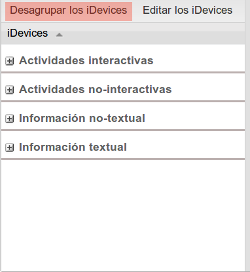

iDevices
Los iDevices son instrumentos que nos permiten introducir diferentes recursos didácticos. Estos van desde preguntas de verdadero-falso hasta otros más complejos como applets de java. La gran ventaja que ofrece eXeLearning es que podremos crear nuevos iDevices dependiendo de nuestras necesidades.
A partir de la versión 2.0 los iDevices se podrán mostrar agrupados o desagrupados. El usuario podrá seleccionar los iDevices que se muestren marcando la casilla visible correspondiente a cada iDevice en el botón "Editar los iDevices".
A continuación se abordarán uno por uno cada uno de los diferentes iDevices, indicando su utilidad y mostrando un ejemplo de utilización.
Los iDevices
La versión de eXeLearning dispone de 20 iDevices principales, cada uno con una utilidad pedagógica o técnica distinta.
iDevices de presentación de información de forma textual.
iDevices de actividades no interactivas: proponen actividades que no se pueden contestar directamente.
iDevices de presentación de información no textual (imágenes y páginas web).
iDevices de actividades interactivas: permiten al alumno interactuar directamente con el objeto.
iDevices experimentales: son actividades en desarrollo, no siendo aconsejables su uso. Sólo a modo de prueba.
Obra publicada con Licencia Creative Commons Reconocimiento Compartir igual 4.0